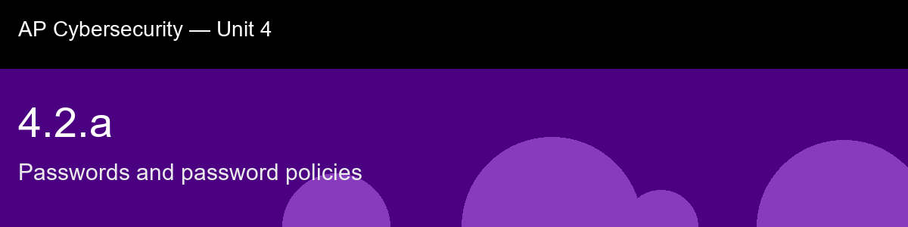

4.2.a, Passwords and password policies
Before class today. Authentication is the process of proving you are who you claim to be. The oldest and most
widespread mechanism is the password, a shared secret known only to the user and the system.
Despite decades of criticism, passwords remain ubiquitous, which makes understanding them
foundational to any cybersecurity curriculum.
The intuition to hold onto: The intuition to carry in is that length beats cleverness, and the math is not close: adding four characters to a password multiplies the attacker's search space by roughly 81 million, while swapping an "a" for an "@" barely inconveniences a dictionary attack that already expects that substitution. If you remember only one thing from the old-school password rules you grew up with, remember that NIST spent 2017 walking almost all of them back, mandatory symbols, forced 90-day rotation, not because security stopped mattering, but because those specific rules were quietly making passwords worse by pushing everyone toward predictable patterns like Summer2024!.
A myth worth busting before we start: "Complexity rules (uppercase + symbol) make passwords strong." -> Complexity rules push users toward predictable patterns (P@ssw0rd1). Length and unpredictability matter more. NIST removed mandatory complexity in 2017.
Today's goal: Evaluate a password against a formal policy (length, complexity, history, lockout) and explain why each rule reduces the risk of unauthorized access.
Handout: pre-lecture-handout.docx.

## 4.2.a, Passwords and password policies
**Before class today.** Authentication is the process of proving you are who you claim to be. The oldest and most
widespread mechanism is the password, a shared secret known only to the user and the system.
Despite decades of criticism, passwords remain ubiquitous, which makes understanding them
foundational to any cybersecurity curriculum.
**The intuition to hold onto:** The intuition to carry in is that length beats cleverness, and the math is not close: adding four characters to a password multiplies the attacker's search space by roughly 81 million, while swapping an "a" for an "@" barely inconveniences a dictionary attack that already expects that substitution. If you remember only one thing from the old-school password rules you grew up with, remember that NIST spent 2017 walking almost all of them back, mandatory symbols, forced 90-day rotation, not because security stopped mattering, but because those specific rules were quietly making passwords *worse* by pushing everyone toward predictable patterns like Summer2024!.
**A myth worth busting before we start:** "Complexity rules (uppercase + symbol) make passwords strong." -> Complexity rules push users toward predictable patterns (P@ssw0rd1). Length and unpredictability matter more. NIST removed mandatory complexity in 2017.
**Today's goal:** Evaluate a password against a formal policy (length, complexity, history, lockout) and explain why each rule reduces the risk of unauthorized access.
Handout: `pre-lecture-handout.docx`.